Last Updated: 2023-05-30
Using encryption, Transport Layer Security (TLS) policies protect communication between clients, API Instances, and upstream services. After you create a secret group, you can add a TLS context or a mutual authentication TLS (mTLS) context and apply the TLS context to API Instances in API Manager to encrypt their inbound and outbound traffic.
In this codelab, we're going to walk you through the process of adding TLS Context for upstream communication with Flex Gateway in Connected Mode. If you don't have TLS for upstream configured, you'll see the following error message.
upstream connect error or disconnect/reset before headers. reset reason: connection failure
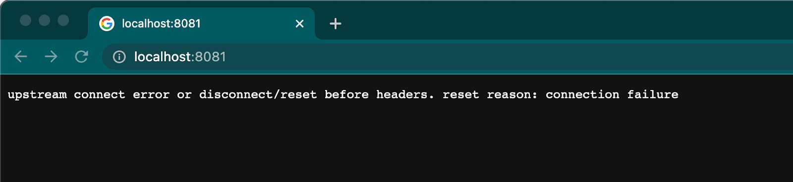
In order to set up TLS for Upstream with Flex Gateway, Privacy Enhanced Mail (PEM) types is required for your Keystore when you configure Anypoint Secrets Manager.
Open a terminal or command prompt and enter the following command:
openssl req -newkey rsa:2048 -new -nodes -x509 -days 3650 -keyout key.pem -out cert.pemThis command generates a 2048-bit RSA private key and a certificate signing request (CSR) in a single step. You'll be prompted to enter the information required for the certificate, such as your organization's details and the domain name(s). Fill in the requested information accordingly.
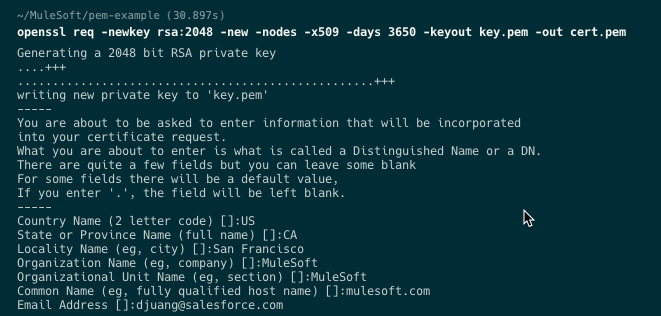
You'll need these two files for the next step when we setup Secrets Manager to add a TLS Context to Flex Gateway.
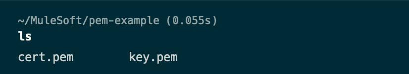
A secret group is a logical grouping of secrets that enables you to manage a group of secrets as a unit. Secrets Manager stores your secrets per secret group, per environment, and per business group. With the private key and certificate that we created in the previous step, let's create a TLS Context.
Open a browser and login to Anypoint Platform and navigate to Secrets Manager.
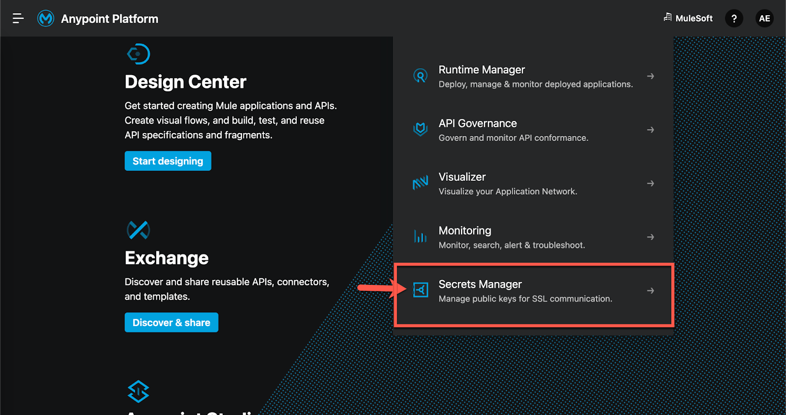
Verify you are in the right environment before clicking on Create Secret Group
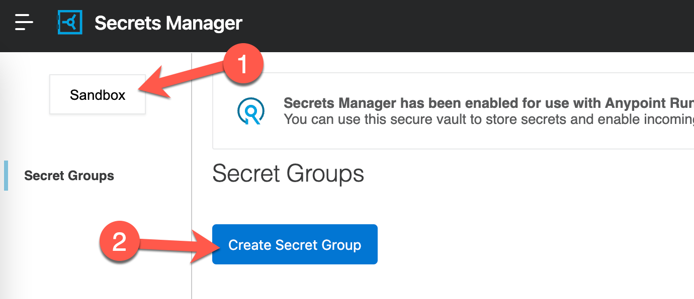
Give the Secret Group a name, click the checkbox for Secret group Downloadable and then click on Save
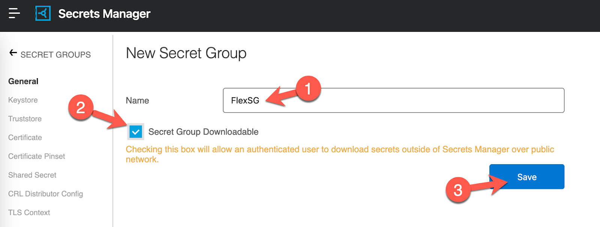
Let's upload the keystore that we created in the first step. Navigate to the Keystore section and click on Add Keystore
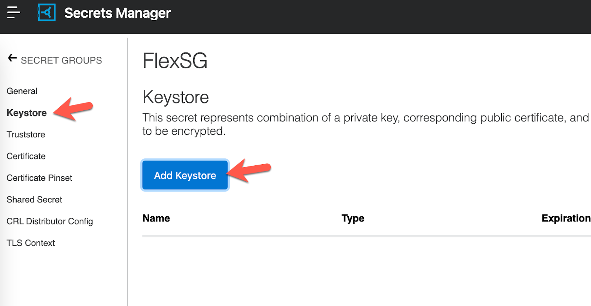
Give the Keystore a name and leave the Type as PEM. For the Certificate File and Key File, use the files that we created in the first step and then click on Save
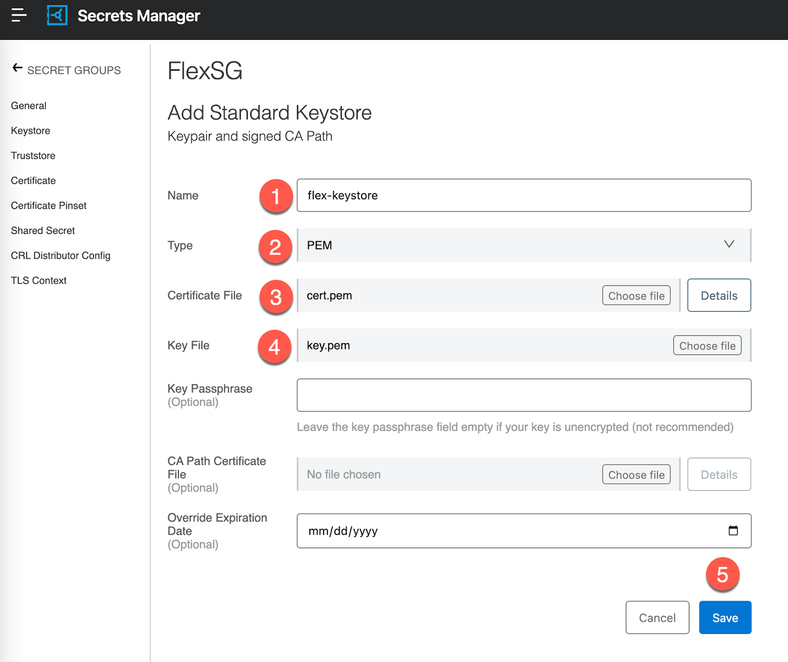
Now that we've added the Keystore, we're going to create a TLS Context. Click on TLS Context in the left-hand navigation and then click on Add TLS Context.
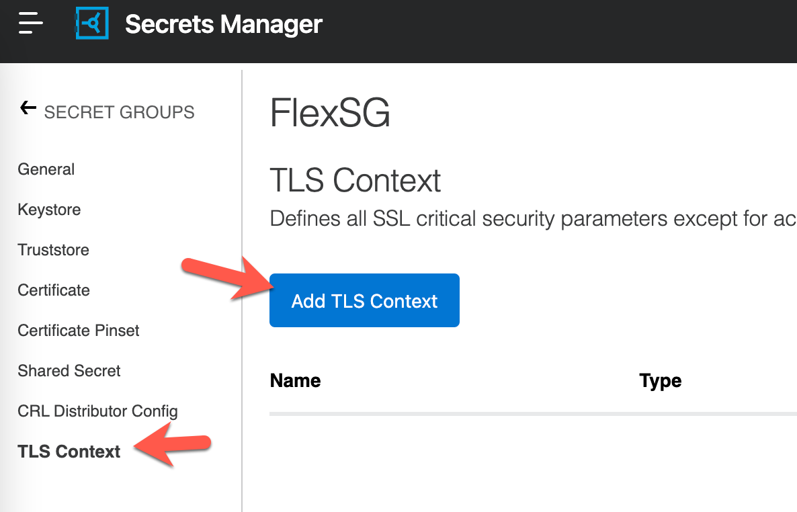
Give the TLS Context a name (1) and then change the dropdown for Target to Flex Gateway (2). For the Keystore field, select the keystore that we just created (3). Finally click on Next.
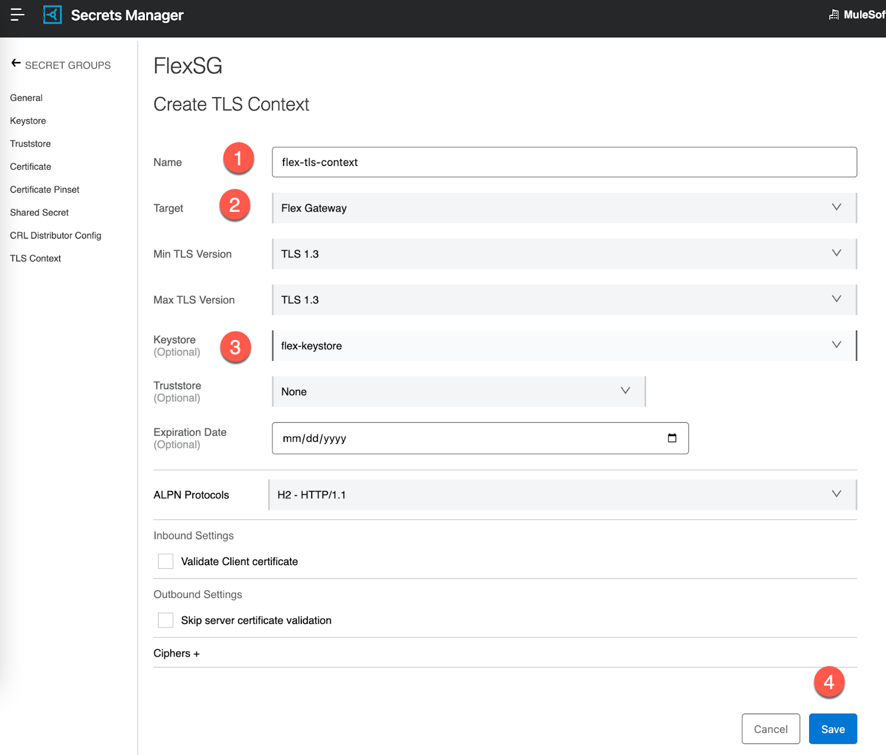
Now that we've created the Keystore and TLS Context, we can set up the API and apply the TLS Context.
We're going to add a new API in API Manager but if you already have one that you need to add TLS Context to, you can skip ahead.
Navigate to back API Manager and click on Add API and then click on Add new API.
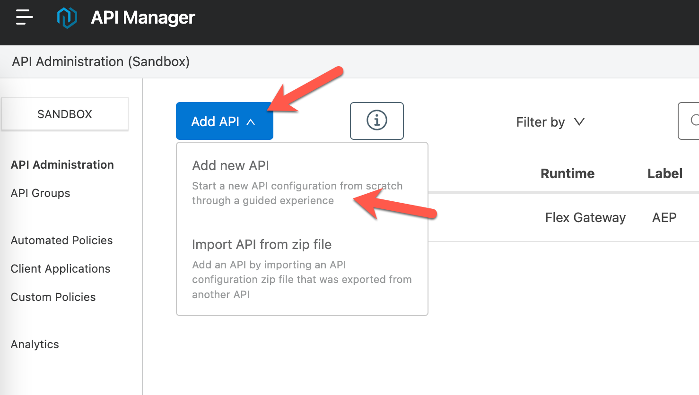
Leave Flex Gateway selected for the Runtime and select your connected Flex Gateway. If you don't have a Flex Gateway setup in Connected Mode yet, do that and then come back to this step. Otherwise, click on Next.
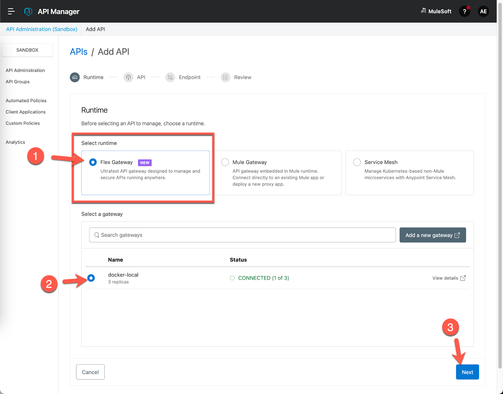
On the next screen, select Create new API. Give the API a name and select HTTP API from the drop down for Asset types. Click on Next.
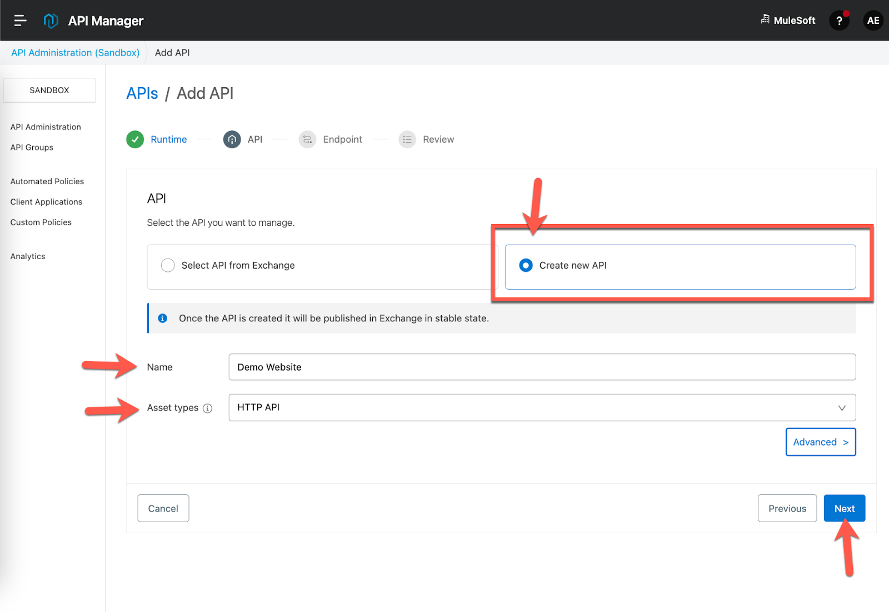
For the Implementation URI, type in the following URL: https://www.aep.com
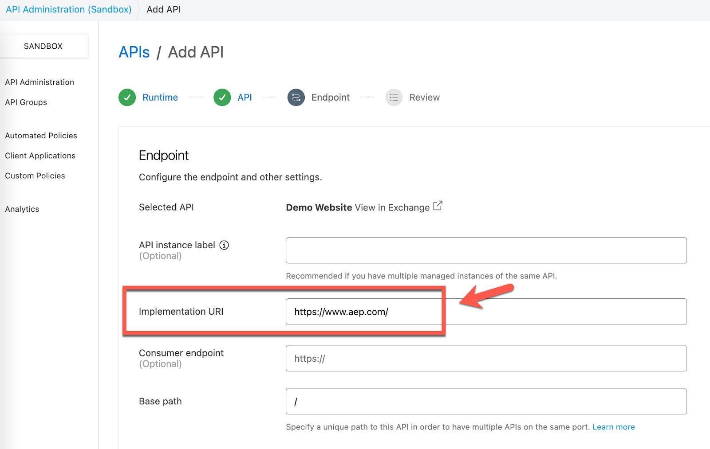
Check the radio button HTTPS for the Scheme and then click on Add TLS Context.
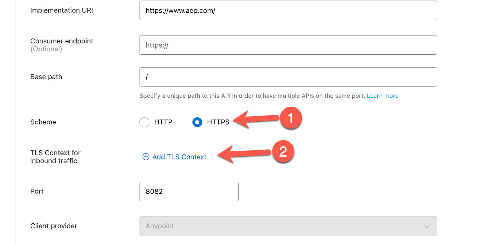
In the pop-up window, select the Secret Group and TLS Context that we created earlier and then click on OK.
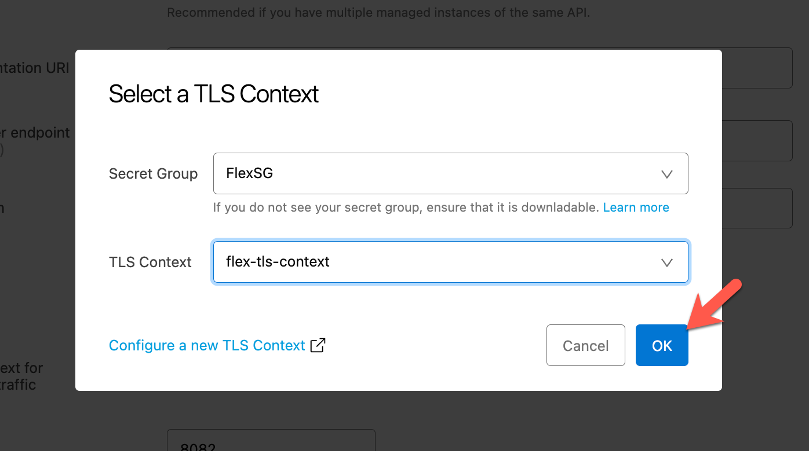
Click Next
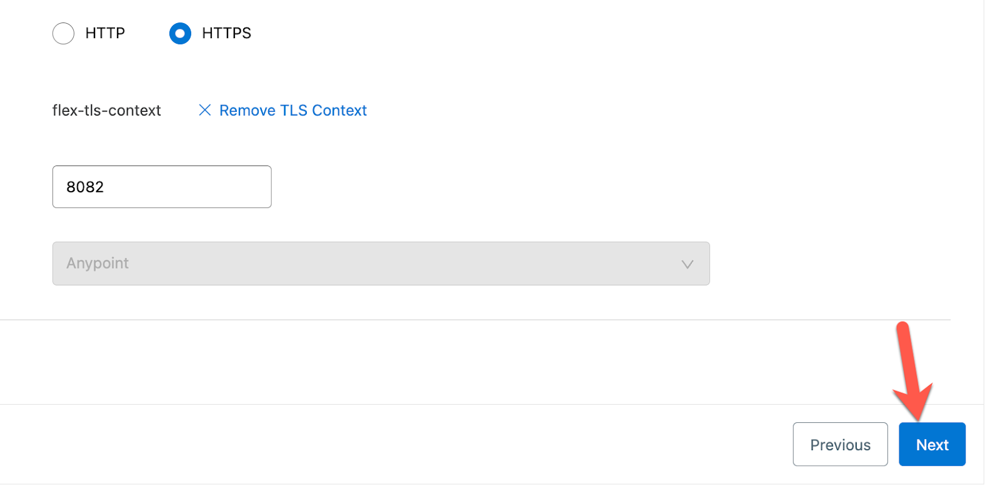
Click on Save & Deploy
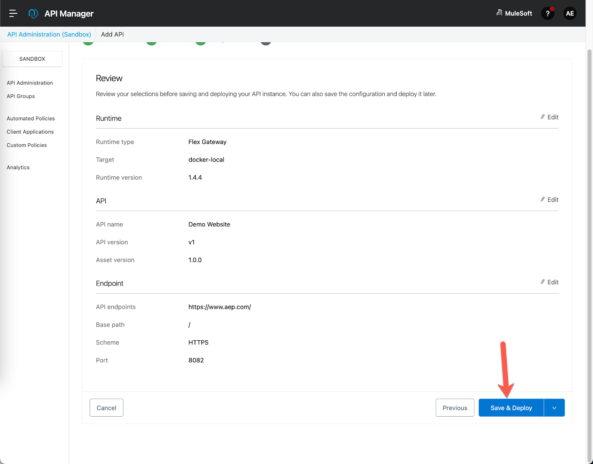
Give the Flex Gateway a couple seconds to get the new configuration before moving on to the next step.
To test out the proxied APIs, open a new tab and navigate to the URL:
https://localhost:8082/If everything was configured correctly, you should see the following screen below.
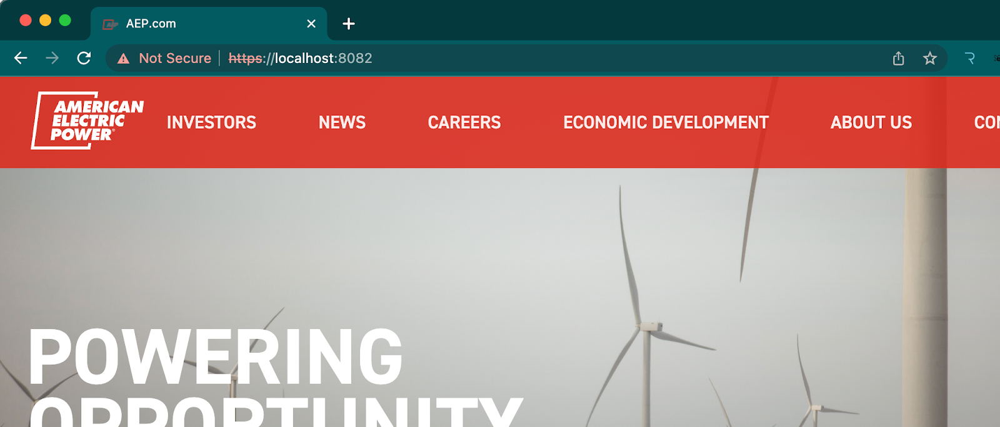
In this codelab, you learned how to set up a TLS Context for upstream with Flex Gateway. We walked through adding the TLS Context in Secrets Manager and adding a new API to API Manager that requires TLS Context for upstream.